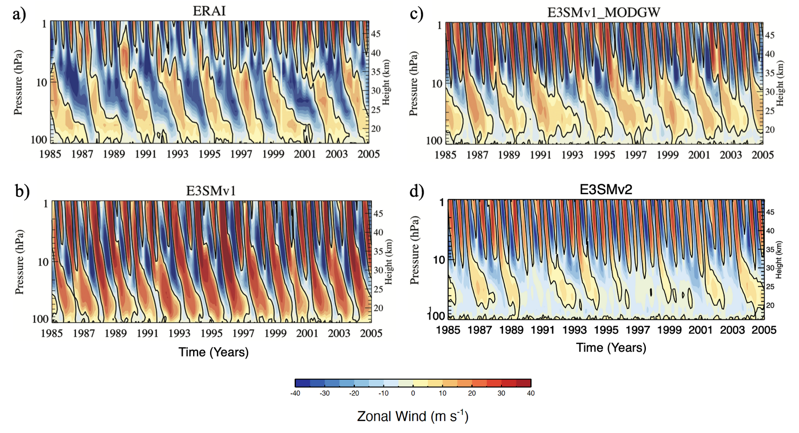

The quasi-biennial oscillation (QBO) is the leading mode of variability in the tropical stratosphere. Though
the QBO itself is confined to the equatorial region, it influences weather and climate patterns globally via
teleconnections that (1) modulate the probability of sudden stratospheric warming events that can lead to
extreme weather in the midlatitudes; (2) regulate the intensity of the Madden-Julian oscillation (MJO); and
(3) control stratospheric chemical constituents such as water vapor, ozone, and volcanic species that impact
climate. While observations of the QBO are plentiful, its representation in most global climate models
remains poor. Particularly alarming are the large QBO biases in the Energy Exascale Earth System Model version 2 (E3SMv2), which appears to have been degraded relative to the previous version for reasons that remain unclear
. QBO biases in
E3SM are hypothesized to stem from an inadequate resolution of the vertical grid and poor representation
of resolved and parameterized gravity waves, whose upward propagation from the troposphere into the
stratosphere and associated momentum deposition drive the QBO. The simulated QBO is highly sensitive
to several model parameters, as well as the formulation of the vertical grid. Model parameter tuning—
adjusting combinations of parameter values to obtain a better simulation—can result in limited improvement
of targeted features (such as the QBO), but this exercise is subjective, inefficient, and computationally
expensive. Further, tuning to improve a targeted feature can degrade other aspects of the simulation, and
examination of the impact of the vertical grid structure has not historically been undertaken during the tuning
process despite its influence on QBO representation.
In 2022, the project titled Improving the Quasi-biennial oscillation through surrogate-accelerated parameter
optimization and vertical grid modification was initiated by the DOE's Scientific Discovery through Advanced Computing (SciDAC) program, a partnership between the Biological and Environmental Research (BER) and Advanced Scientific Computing Research (ASCR) offices. To directly address the gaps in knowledge and predictive capability outlined above, we are now implementing a multifaceted research agenda focused on exploiting machine learning to develop a targeted QBO tuning procedure and
gain a mechanistic understanding of model deficiencies. The project design fosters close BER-ASCR-FASTMath partnerships among experts in climate science, computer science, and machine learning fields.
Building upon the progress of an existing BER subproject focused on E3SM parameter autotuning that uses DAKOTA (FASTMath) and tesuract software, we are developing a robust machine learning-based
workflow leveraging surrogate model accelerators to efficiently and objectively conduct E3SM parameter
optimization. A novel aspect of our project is that we optimize concurrently parameters associated with
the gravity wave scheme and the vertical grid structure, while simultaneously minimizing degradation of
the baseline climate. A comprehensive set of process-oriented diagnostics are used to verify that the
optimized QBO exhibits features consistent with physical processes inferred from observations. Further,
we are leveraging E3SM configurations with alternative treatments of moist convection—including a mesoscale convective parameterization and the multi-scale modeling framework (MMF)—to more deeply probe the
mechanisms that may be missing in the conventional E3SM. Our efforts are expected to produce a robust
parameter optimization workflow resilient to model development changes, significant improvement of the
QBO and its teleconnections in E3SM without degrading the model climate, and a deeper understanding of
the convective processes that conspire to produce the QBO.
 Monthly mean zonal wind averaged between 5°S–5°N as a function of pressure and time for (a) ERA-Interim (ERAI), (b) an atmosphere-ocean coupled historical simulation of E3SM version 1, (c) E3SMv1 with adjusted values of the gravity wave parameterization [E3SMv1_MODGW, see Richter et al. (2019) ], and (d) an atmosphere-ocean coupled historical simulation of E3SMv2. The QBO in E3SMv2 is notably weaker than in E3SMv1 and is associated with decreased activity of higher-frequency tropical convective disturbances.
created with
Website Builder Software .